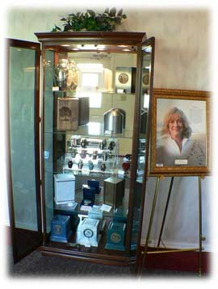

Cresting Meaningful Funerals
|
 Meaningful funerals do not just happen. They are well-thought-out rituals that demand your focus and your time, at least for a day or two. But the planning needn't be a burden if you keep in mind that the energy you expend now to create a personalized, inclusive ceremony will help you and other mourners in their grief journeys for years to come. The following list is intended to empower you to create a funeral that will be meaningful to you and your family and friends. Remember -- funerals are for the survivors. You have the freedom to make use of ritual. The funeral ritual does more than acknowledge the death of someone loved. It helps provide you with the support of caring people. It is a way for you and others who loved the person who died to say, "We mourn this death and we need each other during this painful time." If others tell you that rituals such as these are silly or unnecessary, don't listen. |
|
You have the freedom to plan a funeral that will meet the unique needs of your family. While you may find comfort and meaning in traditional funeral ceremonies, you also have the right to create a ceremony that reflects the unique personality of your family and the person who died. Do not be afraid to add personal touches to even traditional funerals. |
| You have the freedom to ask friends and family members to be involved in the funeral.
For many, funerals are most meaningful when they involve a variety of people who loved the person who died. You might ask others to give a reading, deliver the eulogy, play music or even help plan the funeral. |
|
You have the freedom to view the body before and during the funeral. While viewing the body is not appropriate for all cultures and faiths, many people find it helps them acknowledge the reality of the death. It also provides a way to say goodbye to the person who died. There are many benefits to viewings and open casket ceremonies; don't let others tell you this practice is morbid or wrong. |
|
You have the freedom to embrace your pain during the funeral. The funeral may be one of the most painful but also the most cathartic moments of your life. Allow yourself to embrace your pain and to express it openly. Do not be ashamed to cry. Find listeners who will accept your feelings no matter what they are. You have the freedom to plan a funeral that will reflect your spirituality. If faith is a part of life, the funeral is an ideal time for you to uphold and find comfort in that faith. Those with more secular spiritual orientations also have the freedom to plan a ceremony that meets their needs. |
|
You have the freedom to make use of memory during the funeral. Memories are one of the best legacies that exist after the death of someone loved. You will always remember. Ask your funeral official to include memories from many different people in the eulogy. Use a memory board or a memory table. Ask those attending the funeral to share their most special memory of the person who died with you. |
|
You have the freedom to be tolerant of your physical and emotional limits. Especially in the days immediately following the death, your feelings of loss and sadness will probably leave you feeling fatigued. Respect what your body and mind are telling you. Get daily rest. Eat balanced meals. |
|
You have the freedom to move toward your grief and heal. While the funeral is an event, your grief is not. Reconciling your grief will not happen quickly. Be patient and tolerant with yourself and avoid people who are impatient and intolerant with you, before, during, and after the funeral. Neither you nor those around you must forget that the death of someone loved changes your life forever. |